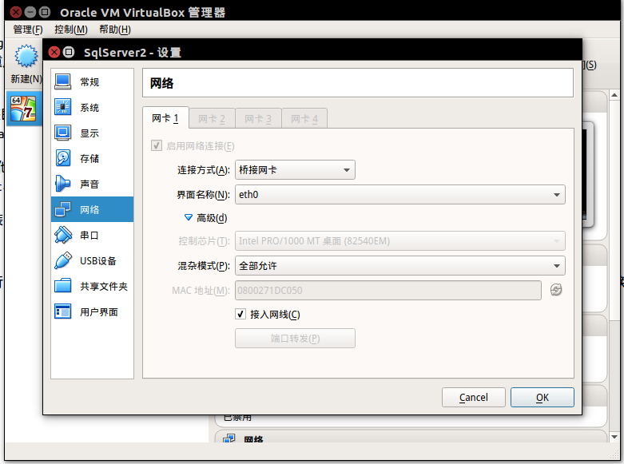
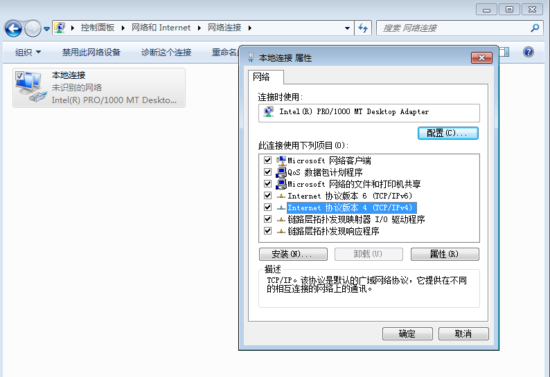
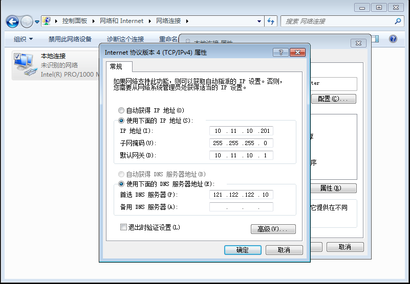

ubuntu下面配置Virtualbox桥接网络，虚拟机系统windows
前提：
最近由于项目需要访问一个iis程序，但是由于各种原因（版本问题，或者对本服务器其他的应用影响比较大等，此处不多说），只能在ubuntu安装虚拟机，虚拟机里装一个windows系统，
把iis程序安装在虚拟机里，从外网访问此程序。
烦恼：
要访问虚拟机里面的程序，也就是要保证外网能够Ping通虚拟机，此处也就联想到了桥接方式
但是根据网上的各种教程，都比较麻烦，而且设计到重启服务器，或者配置完服务器无法上网等问题，此处做一个总结。
过程：
1 首先虚拟机选择Virtualbox,自行安装网上教程安装即可，不做介绍
2 配置windows系统，参考百度经验：https://jingyan.baidu.com/article/414eccf64ce6a36b431f0a93.html
虚拟机默认设定网路时选择的NAT模式，但是局域网其他服务器无法访问该虚拟机内部程序，应该采用桥接模式(Bridged)，
这里的桥接模式就如同VMware中的Bridged模式，Host与Guest在局域网(LAN)中的地位是相等的
- 在基于 Debian 和 Ubuntu 的系统上，首先要安装含有建立虚拟网络设备 ( TAP interfaces ) 的工具 uml-utilities 和桥接工具 bridge-utils：
sudo apt-get install uml-utilities
sudo apt-get install bridge-utils
2 为了使你的虚拟机能够访问网络接口，你必须将运行虚拟主机的用户的用户名（通常是你的ubuntu登录用户名）添加到uml-net用户组（请用你的用户名替换其中的“vboxuser”）：
sudo gpasswd -a vboxuser uml-net
3 设置虚拟机
连接方式：桥接
界面名称：选择本机使用网卡，
高级：混杂模式选择全部运行
勾选下面的连接网线
点击确定

4 windows设置静态ip
进入windows虚拟系统
点击控制面板—查看方式选择类别—点击网络和Internet—点击网络和共享中心—更改网络适配器—右键网络属性

双击TCP/IPV4,点击使用下面的ip地址，配置静态ip
注意：
ip地址和本机服务器在同一网段（只要最后一位不同即可），其他配置和本机服务器一致

这样主机和虚拟机就成了局域网中地位相同的两台机器了，可以互相访问了。